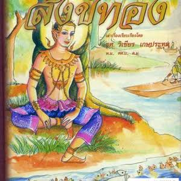

สังค์ทอง

สังข์ทอง เป็นวรรณคดีไทยประเภทบทละครนอก พระราชนิพนธ์ในพระบาทสมเด็จพระพุทธเลิศหล้านภาลัย (รัชกาลที่ 2) ที่ดัดแปลงมาจาก "สุวรรณสังขชาดก" ในปัญญาสชาด"

สังข์ทอง เป็นวรรณคดีไทยประเภทบทละครนอก พระราชนิพนธ์ในพระบาทสมเด็จพระพุทธเลิศหล้านภาลัย (รัชกาลที่ 2) ที่ดัดแปลงมาจาก "สุวรรณสังขชาดก" ในปัญญาสชาด"